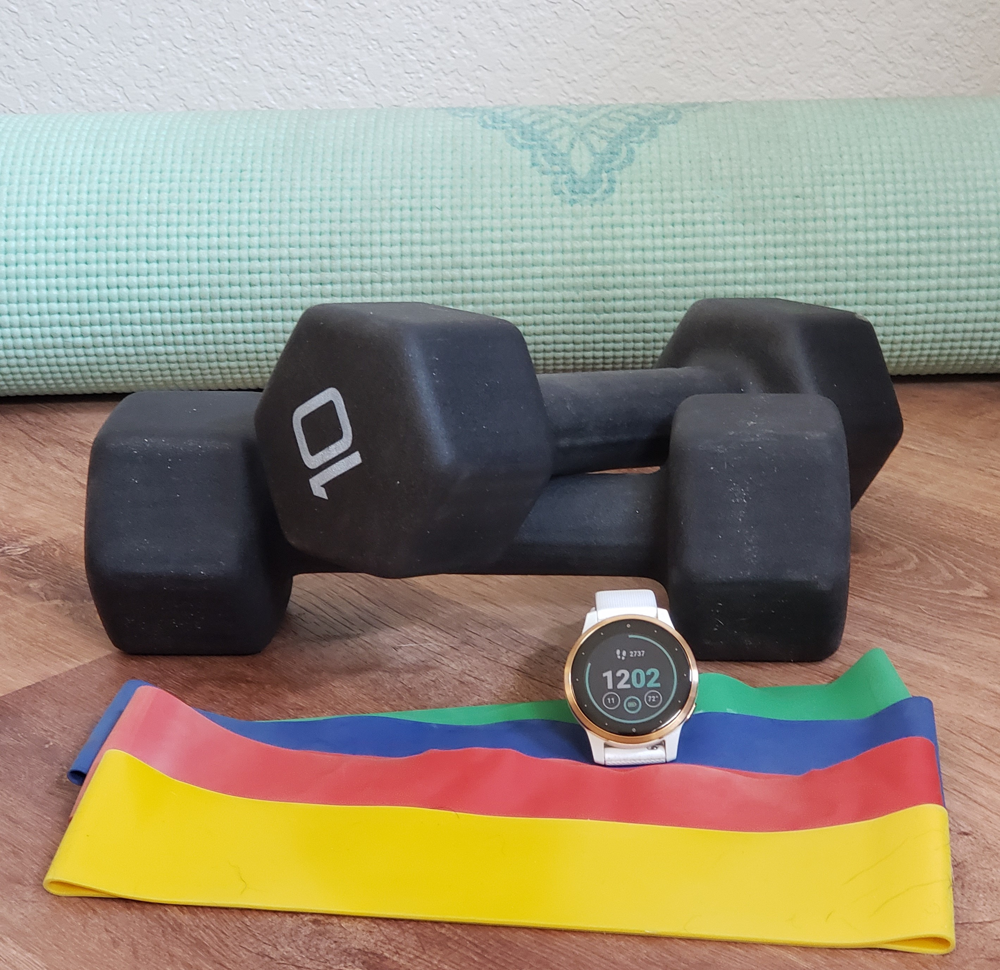

What I Learned From My Beachbody Workouts and Fitness Watch Data

Introduction
I was looking for an analysis hobby project to dust off my R programming skills after over two years since completing my Master’s program. Thinking back on the data I’m accumulating in my life, I started wondering what my Beachbody online workout data would tell me.
I began using Beachbody products in 2013 when my husband bought the DVD version of original P90x program with instructor Tony Horton, which we completed together to prepare for a Mui Thai Kickboxing class. After that awesome experience, some years later we purchased the P90x3 DVD which reduced its workout lengths from ~45-60 minutes to a more palatable 30 minutes, which we could commit too with full time engineering jobs. I was pretty happy with the effectiveness of these workouts and continued to use them intermittently for the next several years.
It wasn’t until 2019 when a friend introduced me to Beachbody On-Demand (BOD) that I began to consider branching out my workout experiences. Then when 2020 hit with COVID-19 and work-from-home, I pulled the trigger and bought the annual subscription, which at $99/yr is quite reasonable compared to a gym membership. After all, what kind of a price can you put on good health (mental and physical).
The second addition to my digital workout arsenal came in the form of a Garmin Vivoactive 4S fitness watch. I am usually a tech trend lagger so it was my husband who bought this for me in Christmas 2020. I started tracking my walking, cycling and workouts so I could get a sense of my distance/steps, heart rate and expended calories during my workouts.
I’ve been fairly diligent with the workouts since I schedule time on my work calendar to do them every day, but I was terrible at keeping track and didn’t record the workouts as I probably should have been. Now, almost 3 years later, I started wondering what my workout history could tell me.
Data Sources and Column Descriptions
Beachbody On-Demand (BOD):
BOD does keep a workout history but with several major downsides:
- The data is not extractable into a worksheet. To collect my data I had to login into my account, find the history and click each day to manually record the available information.
- Some data had to be filled in manually. For example the instructor information is not within the history, but something I had to pull from the workout description itself. I also wanted to know when I started and finished a program, which meant that I had to manually code the day number of the program myself. Lastly I wanted insights into the activity type, so I manually coded the exercise as Yoga, Cardio, Meditation, or Abs.
- The history only includes the past year’s worth of data. This means that some programs are not able to be adequately represented due to missing data.
- This manual encoding only has date information and no time-stamp to align the Garmin activity.
| Column Name | Description |
|---|---|
| *Date | date of workout (year-month-day) |
| Time | length of workout (minutes) |
| Program | the name of the program |
| Instructor | the main instructor of the program |
| Activity.Type | distinguish yoga from cardio or short abs workouts |
Garmin Watch:
My watch keeps track of calories, time, max and avg heart rate information. It also tracks other things but these are the ones I’m interested in for this initial analysis. Garmin keeps track of workout history and the Connect App conveniently has an extract-to-.csv format feature I ran on my computer. However the downside was that the watch only saved my workout history for the last 10 months because I had not been syncing my watch to my phone app on a regular basis. Lesson learned that I need to be doing this more frequently, at least every 4 weeks or so would probably be sufficient.
| Column Name | Description |
|---|---|
| *Date | date of workout (year-month-day hours:minutes:seconds), converted to just day to merge with BOD date |
| Activity.Type | Cardio, Cycling, Running, Walking (Cardio is what I use during BOD workouts) |
| Calories | total calories burned during the workout |
| Time | length of workout (hours:minutes:seconds), converted to minute integers to compare with BOD time |
| Avg.HR | average heart rate |
| Max.HR | maximum heart rate |
*Date is a key column used to merge/combine the two datasets
Data Integrity Issues
Deriving an accurate dataset involved quite a few manual steps and fixing various issues.
User Error:
- I don’t typically turn on my watch activity tracker during yoga sessions, so I don’t have calorie information for those activity types.
- At times I will start an activity tracking on my watch and forget to turn it off, which then forces me to discard the whole record. This will cause records to show up on BOD with no associated watch data.
- Activities where I forget to turn the watch activity tracking on, or forget to put the watch on all together.
- Activities which start but get paused after only recording a few minutes of time and I forget to unpause again. Thus the calories indicate by the watch data are significantly misrepresenting the actual workout length from BOD.
These issues will result in missing data and potentially erroneous data. Therefore, any conclusions will have to keep that in mind and may require an iterative process of the user (me) to review the results and correct as I discover them.
Multiple workouts in one day:
The datasets are joined by date, without the datetime stamp. Therefore invalid data may be the result of combining datasets with one or more entry per day in either BOD or Garmin. In those cases, joining datasets may not know how to align due to lack of timestamp to assist in aligning them. These could be cleaned manually by making some intuitive inferences.
Prerequisites
- install R packages
# install.packages("ggplot2")
library(ggplot2)
#install.packages("dplyr")
library(dplyr)##
## Attaching package: 'dplyr'## The following objects are masked from 'package:stats':
##
## filter, lag## The following objects are masked from 'package:base':
##
## intersect, setdiff, setequal, unionAnalysis
Read the data file in .csv format and convert Date column data type to datetime:
data <- read.csv(file = "C:/Users/17077/Documents/Health/Beachbody Workouts.csv") #Beachbody On-Demand (BOD)
# remove BOD rows without an instructor
data <- data[-which(data$Instructor == ""), ]
# convert the Date column to the datetime data type
data$Date <- as.Date(data$Date, "%m/%d/%Y")
#data$Date <- format(data$Date,"%m/%d/%Y") # this changes it to a character
# rename the column 'Time..m.' to just 'Time' to make the code simpler
names(data)[names(data) == 'Time..m.'] <- 'Time'
#data$Yr_ww <- paste(data$Year, "_", data$Week)
#summary(data)create a combined dataset between BOD and Garmin watch. Filter only to Activity Type of ‘Cardio’ for this analysis:
# read in the garmin file
garmin <- read.csv(file = "C:/Users/17077/Documents/Health/Garmin_Activities.csv")
garmin$Calories <- strtoi(garmin$Calories)
names(garmin)[names(garmin) == 'Time'] <- 'Time.garmin'
garmin$Timediff <- round(as.numeric(as.difftime(garmin$Time.garmin, format = "%H:%M:%S")),1) # 00:32:36
# only keep garmin data with activity type set to Cardio because those will be the ones that align to the BOD activities
dt_cardio <- garmin[which(garmin$Activity.Type == "Cardio"), c("Date", "Calories", "Avg.HR", "Max.HR", "Timediff")]
# convert the Date field type to be recognized as datetime data type, remove the time since we don't care about that
dt_cardio$Date <- as.Date(dt_cardio$Date, "%Y-%m-%d %H:%M:%S") # 2022-09-09 12:30:39
dt_cardio$Date <- format(dt_cardio$Date,"%m/%d/%Y") # converts back to a string
dt_cardio$Date <- as.Date(dt_cardio$Date, "%m/%d/%Y")
# inner join the two datasets based on date
dt_comb <- merge(dt_cardio, data[,c("Date","Program","Workout", "Description","Instructor", "Time", "Activity.Type")], by = "Date", all = TRUE) # outer join
# remove missing values that have BOD data by no watch data or vice versa
dt_comb <- na.omit(dt_comb, cols=c("Calories", "Program"))
dt_comb <- dt_comb[which(dt_comb$Activity.Type == "Cardio"),] # filter only to the cardio programs for this analysis
#dt_comb
dt_wk <- data %>% group_by(Year, Week) %>% summarize(workout_cnt = n()) # pivot by year and week to estimate the average number of workouts per week## `summarise()` has grouped output by 'Year'. You can override using the
## `.groups` argument.avg_workout_per_week <- round(mean(dt_wk$workout_cnt),1)Check for Data Integrity Issues
# look for inconsistencies between BOD Time and garmin's recorded Timediff
# add blue reference lines around +/- 10 minute
dt_comb %>% ggplot(aes(x = Time, y = Timediff)) + geom_point() + labs(x = "BOD time", y = "Garmin Time", title = "Garmin vs BOD workout length") +geom_abline(slope = 1, intercept = 1, color="grey") + geom_abline(slope = 1, intercept = 10, color="blue", style="dashed") + geom_abline(slope = 1, intercept = -10, color="blue", style = "dashed")## Warning: Ignoring unknown parameters: style
## Ignoring unknown parameters: style
Values which are not within 10 minutes are indicative of a data integrity problem! This shows 5 Garmin workout times below 10 minutes. This is a user-error scenario described previously.
First let’s look at some overall totals:
# how many overall workouts did I do in the past year?
total_workouts <- nrow(data) # total number of workouts is equal to the total number of rows
# how many overall hours is this?
total_time = sum(data$Time)
total_time_h = round(total_time / 60,1)
num_progs = length(unique(data$Program))
num_inst = length(unique(data$Instructor))
date_start_bod <- min(data$Date)
date_stop_bod <- max(data$Date)
bod_cals <- sum(dt_comb$Calories)
bod_lbs <- round(bod_cals/3500,0)
total_workouts_tracked <- nrow(dt_comb)
total_calories <- sum(dt_comb$Calories)
max_hr <- max(dt_comb$Max.HR)
avg_hr <- round(mean(dt_comb$Avg.HR),0) # closest whole number
date_start <- min(dt_comb$Date)
date_stop <- max(dt_comb$Date)BOD Summary (09/28/2021 to 09/09/2022):
| Total Calories | 21204 (~ 6 lbs @3500 cals per pound) |
| Total Number of Workouts | 162 |
| Total Time | 4767 min (79.4 hrs) |
| Avg #workouts per week | 3.5 |
| Variety of Experiences | 12 instructors over 19 different programs |
BOD + Garmin Summary (11/24/2021 to 09/09/2022):
| Total Number of Workouts | 95 |
| Total calories burned | 21204 |
| Heart rate | 194 max, 134 avg |
Beachbody Activity Types
My Beachbody workouts were categorized into two activity types: Yoga and Cardio. (Note that Cardio is comprised of workouts that contain both cardio and weights or strength training, but for simplicity we’ll group anything not yoga into Cardio) I wanted to know what percentage of my workouts were yoga versus cardio?
# visualize what percent of the workouts are Cardio vs Yoga
activity_type <- data %>% group_by(Activity.Type) %>% summarize(workout_cnt = n())
# calculate as a percent (proportion)
activity_type$prop = round(100*(activity_type$workout_cnt/sum(activity_type$workout_cnt)),0)
# Compute the position of labels
activity_type <- activity_type %>%
arrange(workout_cnt) %>%
mutate(ypos = cumsum(prop)- 0.1*prop )
ggplot(activity_type, aes(x="", y=workout_cnt, fill=Activity.Type)) + geom_bar(stat="identity", width=1, color="white") + coord_polar("y", start=0) + theme_void() + geom_text(aes(y = ypos, label = paste(prop,'%')), color = "black", size=6) + labs(title = "Beachbody On-Demand Activity Type (%)") 
About a quarter of my workouts are yoga while three quarters focus on cardio.
Beachbody Instructors
# try the bar chart again but use a stacked viz to show the activty type per instructor
dt_inst_act <- data %>% group_by(Instructor, Activity.Type) %>% summarize(workout_cnt = n())## `summarise()` has grouped output by 'Instructor'. You can override using the
## `.groups` argument.dt_inst_act <- dt_inst_act[order(dt_inst_act$workout_cnt, decreasing = TRUE),] # order decending by workout total count
# calculate a new column as the percent of total workouts
dt_inst_act$workout_pct = round(100*(dt_inst_act$workout_cnt/sum(dt_inst_act$workout_cnt)),0)
names(sum_inst)[names(sum_inst) == 'workout_cnt'] <- 'instructor_cnt' # rename to instructor count
dt_comb2 = merge(dt_inst_act, sum_inst[,c("Instructor","instructor_cnt")], by="Instructor")
#dt_comb2
# plot the bar chart ordered by value so that the instructor with the most workouts is listed first and so on
#dt_comb2 %>% ggplot(aes(x=fct_reorder(Instructor, instructor_cnt), y = workout_pct, fill = Activity.Type)) + geom_col(position="stack") + #coord_flip() + labs(y = "% Workouts", x = "Instructor", title = "Workouts by Instructor") + geom_text(aes(Instructor, instructor_cnt, #label=instructor_cnt, fill=NULL), data = sum_inst)
# plot the x-axis using the workout percent of total, but label with the absolute number to put into context
ggplot(dt_comb2, aes(reorder(Instructor, instructor_cnt, sum), workout_pct, fill = Activity.Type)) +
geom_col() +
geom_text(
aes(label = instructor_cnt, group = Instructor),
stat = 'summary', fun = sum, vjust = 0, hjust=-.2) + coord_flip() + labs(y = "% Workouts", x = "Instructor", title = "Workouts by Instructor")
Autumn is clearly my favorite instructor. I’ve done 84 of her workouts (>50% of the total workouts), while Tony Horton comes in second at 34 workouts(>20% of the total workouts). However clearly Tony has been my go-to yoga instructor!
How Long Is Each Workout?
# histogram with 5 minute bin sizes
ggplot(data, aes(x=Time)) + geom_histogram(binwidth=5, color="black", fill = "steelblue") + geom_vline(aes(xintercept=median(Time)),
color="red", linetype="dashed", size=1) + labs(x = "workout length (min)", title = "Distribution of BOD Workout Length")
#plot(data$Date, data$Time, cex = 0.9, xaxt = "n", color=data$Activity.Type)
# change the data label format for the Date x-axis
#axis(1, data$Date, format(data$Date, "%d-%m-%y"))
# calculate the median time
time_med = median(data$Time)
data %>% ggplot(aes(Date, Time, color=Activity.Type)) + geom_point() + geom_hline(yintercept = time_med, color="red", linetype="dashed", size=1) + labs(y = "workout length (min)", title = paste("Workout Length by Date (median = ",time_med," min)"))
I’ve been consistently completing ~ 30 minute workouts
The typical (median) workout length is 30 minutes. The higher values on the left-hand side were due to ending a previous program (80-Day Obsession) which had workouts between 30-60 minutes.
Which Day do I prefer Working Out?
data$weekday <- weekdays(data$Date)
dt_week <- data %>% group_by(weekday, Day.Of.Week) %>% summarize(workout_cnt = n())## `summarise()` has grouped output by 'weekday'. You can override using the
## `.groups` argument.ggplot(data=dt_week, aes(x=reorder(weekday, Day.Of.Week), y=workout_cnt)) + geom_bar(stat="identity") + labs(x = "Day of Week", y = "#workouts", title = "Workouts by Day of Week")
Most preferred days to workout are Monday-Thursday. Least preferred day is Saturday when I tend to do non-BOD activities
Which Beachbody Programs Have I Experienced?
# visualize what percent of the workouts are Cardio vs Yoga
dt_pgm <- data %>% group_by(Program, Instructor) %>% summarize(workout_cnt = n())## `summarise()` has grouped output by 'Program'. You can override using the
## `.groups` argument.# calculate as a percent (proportion)
dt_pgm$prop = round(100*(dt_pgm$workout_cnt/sum(dt_pgm$workout_cnt)),0)
#sort in descending order
ggplot(dt_pgm, aes(x=workout_cnt)) + geom_histogram(binwidth=1, color="black", fill = "steelblue") + labs(x = "Program count", title = "Distribution Workouts by Program")
knitr::kable(dt_pgm[order(-dt_pgm$workout_cnt),])| Program | Instructor | workout_cnt | prop |
|---|---|---|---|
| 9 Week Control Freak | Autumn | 69 | 43 |
| P90x3 | Tony Horton | 24 | 15 |
| Morning Meltdown 100 | Jericho | 11 | 7 |
| 22 Minute Hard Corps | Tony Horton | 10 | 6 |
| 80 day obsession | Autumn | 6 | 4 |
| Barre Blend | Elise | 6 | 4 |
| 21 Day Fix Extreme Real Time | Autumn | 4 | 2 |
| 3 Week Yoga Retreat | Vitas | 4 | 2 |
| Tai Cheng | Dr. Mark Cheng | 4 | 2 |
| 21 Day Fix Real Time | Autumn | 3 | 2 |
| 3-Day Yoga Refresh | Ted | 3 | 2 |
| Focus T25 | Shaun T | 3 | 2 |
| Yoga Studio | Ted | 3 | 2 |
| 3-Day Yoga Refresh | Vitas | 2 | 1 |
| Job 1 | Jennifer Jacobs | 2 | 1 |
| Yoga Studio | Jericho | 2 | 1 |
| #MBF | Megan Davies | 1 | 1 |
| 21 Day Fix Extreme | Autumn | 1 | 1 |
| 3-Day Yoga Refresh | Elise | 1 | 1 |
| 4 Weeks for Every Body | Autumn | 1 | 1 |
| Just Your Body Weight | Carmel | 1 | 1 |
| Xtend Barre | Andrea Rogers | 1 | 1 |
The past year has been dominated by the ‘9 Week Control Freak’ program by instructor Autumn Calabrese. That program has 45 total workouts (5 workouts per week x 3 phases x 3 weeks per phase). Since I’ve done 69 from that program, it shows that I completed it once and started doing it again.
Calories vs Heart Rate
Questions to answer:
- What is the correlation of rate of calories burned versus the average heart rate during the workout?
- Quantify the calories burned per minute versus the average heart rate to associate the payoff to the effort.
ggplot(dt_comb, aes(x=Program, y = Avg.HR)) + geom_boxplot() + coord_flip() + labs(title = "Average Heart rate by Program")
# calculate calories per minute
dt_comb$cal_per_min = dt_comb$Calories / dt_comb$Timediff # both time and calories from the watch
#ggplot(dt_comb, aes(x=Program, y = cal_per_min)) + geom_boxplot() + coord_flip() + labs(title = "Average Calories Burned per Minute by Program")
#lm_fit <- lm(Avg.HR ~ cal_per_min , data=dt_comb) # regression fit equation
lm_fit <- lm(cal_per_min ~ Avg.HR , data=dt_comb) # regression fit equation
r2 <- round(summary(lm_fit)$r.squared,2)
slope = round(coef(lm_fit)[["Avg.HR"]] * 10,1)
#fit_line <- data.frame(pred = predict(cal_fit = predict(lm_fit, dt_comb))
# attributes(summary(lm_fit))
annotations <- data.frame(
xpos = c(-Inf, -Inf),
ypos = c(Inf, Inf),
annotateText = c(paste("fit line slope: ", slope ," more calories for additional 10 bpm"),
paste("fit line R-squared:", r2)),
hjustvar = c(0,0) ,
vjustvar = c(1,3))
# display calories by average heartrate
dt_comb %>% ggplot(aes(x = Avg.HR, y = cal_per_min)) + geom_point() + labs(x = "Avg.HR (bpm)", y = "calories per minute", title = "Calories burned per min vs Avg Heart rate") + geom_smooth(method="lm", se = FALSE) +
geom_text(data = annotations, aes(x=xpos,y=ypos,hjust=hjustvar,
vjust=vjustvar,label=annotateText)) + scale_y_continuous(breaks = seq(0, 100, by = 1), minor_breaks = seq(0,0,0))## `geom_smooth()` using formula 'y ~ x' This two-way plot shows a pretty strong correlation between average heart rate and calories burned per minute. This data supports a fairly basic intuition that higher effort (higher BPM) will result in more calories burned. But note that this calculation provides an actual number.
This two-way plot shows a pretty strong correlation between average heart rate and calories burned per minute. This data supports a fairly basic intuition that higher effort (higher BPM) will result in more calories burned. But note that this calculation provides an actual number.
An extra 1.2 calories per minute can be burned by increasing heart rate by 10 bpm.
Run a one-way ANOVA to test for significance of Avg.HR by Program
A Tukey test can run a simultaneous comparison to group the programs by Avg.HR
library(agricolae)
anova <- aov(Avg.HR ~ Program, data = dt_comb)
#summary(anova)
# resource: https://r-graph-gallery.com/84-tukey-test.html
#tukey = TukeyHSD(x=anova, conf.level = 0.95)
#tukey
# agricolae library
# resource: https://rpubs.com/aaronsc32/post-hoc-analysis-tukey
tukey <- HSD.test(anova, trt='Program', alpha=0.06) # 0.05 alpha seemed too selective, grouping too many in 'ab'
tukey## $statistics
## MSerror Df Mean CV
## 57.18118 82 134.3158 5.629885
##
## $parameters
## test name.t ntr StudentizedRange alpha
## Tukey Program 13 4.731866 0.06
##
## $means
## Avg.HR std r Min Max Q25 Q50 Q75
## 21 Day Fix Extreme Real Time 125.6667 18.339393 3 105 140 118.50 132.0 136.00
## 21 Day Fix Real Time 129.3333 8.736895 3 122 139 124.50 127.0 133.00
## 22 Minute Hard Corps 139.2857 7.341986 7 128 148 134.50 143.0 143.50
## 4 Weeks for Every Body 104.0000 NA 1 104 104 104.00 104.0 104.00
## 9 Week Control Freak 134.4286 6.955421 63 118 156 130.00 135.0 138.00
## Barre Blend 134.5000 6.862944 6 127 144 130.50 132.0 139.50
## Focus T25 143.3333 3.511885 3 140 147 141.50 143.0 145.00
## Job 1 125.5000 12.020815 2 117 134 121.25 125.5 129.75
## Just Your Body Weight 140.0000 NA 1 140 140 140.00 140.0 140.00
## Morning Meltdown 100 142.0000 11.313708 2 134 150 138.00 142.0 146.00
## P90x3 142.0000 2.828427 2 140 144 141.00 142.0 143.00
## Tai Cheng 127.0000 NA 1 127 127 127.00 127.0 127.00
## Xtend Barre 124.0000 NA 1 124 124 124.00 124.0 124.00
##
## $comparison
## NULL
##
## $groups
## Avg.HR groups
## Focus T25 143.3333 a
## Morning Meltdown 100 142.0000 a
## P90x3 142.0000 a
## Just Your Body Weight 140.0000 a
## 22 Minute Hard Corps 139.2857 a
## Barre Blend 134.5000 a
## 9 Week Control Freak 134.4286 a
## 21 Day Fix Real Time 129.3333 ab
## Tai Cheng 127.0000 ab
## 21 Day Fix Extreme Real Time 125.6667 ab
## Job 1 125.5000 ab
## Xtend Barre 124.0000 ab
## 4 Weeks for Every Body 104.0000 b
##
## attr(,"class")
## [1] "group"# vlookup the group assignment to the program
#boxplot(dt_comb$Avg.HR ~ dt_comb$Program , ylim=c(min(dt_comb$Avg.HR) , 1.1*max(dt_comb$Avg.HR)) , ylab="value" , main="") + coord_flip()
# col=my_colors[as.numeric(LABELS[,1])]
# Reference: http://rfunction.com/archives/1302
#ggplot(dt_comb, aes(x=Program, y = Avg.HR)) + geom_boxplot() + coord_flip() + labs(title = "Average HR by Program")
par(mar=c(5,12,4,1)+0.1, mpg=c(10,1,0)) # widen margin to fit program name labels mar=c(bottom, left, top, and right. )## Warning in par(mar = c(5, 12, 4, 1) + 0.1, mpg = c(10, 1, 0)): "mpg" is not a
## graphical parameter# mpg=c((i.e. xlab and ylab in plot), the second the tick-mark labels, and third the tick marks.)
plot(tukey, horiz=TRUE, las=1) # las = 1 for horizontal tick mark labels
title( xlab="Avg.HR")
Programs which give me the highest average heart rate (and hence more calories burned per minute) are Focus T25, Morning Meltdown 100, P90x3, JYBW, Barre Blend and 9 Week Control Freak. Even though I only did 1 workout from the ‘4 Weeks for Every Body’ program, it’s clear that it’s not as efficient use of time as the other programs.
Conclusion
I was proud of myself for being consistent with my workouts for the last 12 months, but somewhat surprised to see how few pounds worth of calories I had actually burned from the Beachbody workouts (only 6 pounds). However it was motivating to see data that supports the additional calories per minute I can burn if I up my effort and get my heart rate up for longer periods of time when I am working out. I also appreciated the data that supported my intuition about which programs are more effective than others for heart rate and effective calorie burning.
The only disappointment I encountered through this process was the difficulty to extract the Beachbody data from the app and being limited by data beyond a year ago. I was really hoping to compare complete programs like Barre Blend and 80 Day Obsession which were completed over a year ago.
The analysis enabled me to realize how technological feature advancement in smart watches could improve the quality of the data and insights. For example the ability to connect directly to online programs like BOD could enable users to easily associate calories and heart rate to specific programs and workouts. Additionally, I learned how to enable my smart watch to auto-start and auto-stop activities which I hope will improve my partial and missing calories and heart rate data. Before this analysis I didn’t realize the impact that my user-errors would have on the analytics.
I look forward to the future of fitness watches and automated activity tracking capabilities, and I hope there will be more synergy with online workout programs to bring fitness tips and insights to users like myself.